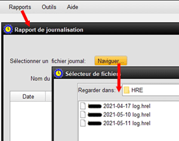

Cet écran permet à l'utilisateur d'examiner les fichiers journaux d'activité HRE qui sont crées à chaque ouverture de HRE et de choisir d'éffectuer plusieurs tàches sur ces fichiers. 1. Sélectionnez RAPPORT >> ENREGISTREMENT 2. Cliquez sur NAVIGUER pour ouvrir le dossier par défault des fichiers journaux HTR, comme indiqué. 3. Une liste des fichiers journaux quotidiens est maintemant affichée et un double-clic sur l'un de ceux-ci ouvrira le fichier, qui montre toute l'activité dans HRE au cours de ce jour particulier. 4. Le fichier journal peut contenir une grande quantité de données sous les en-têtes: date, heure, serveur (ordinateur), nom du projet et entrée de journal. Notez que cette dernière colonne peut inclure des actions de programme ainsi que des erreurs. 5. Vous pouvez maintenant exporter le contenu du journal, ou une partie sélectionnée de celui-ci, vers un fichier ou une imprimante. Cela peut être utile pour le support technique ou pour retracer les étapes d'une session de HRE. Pour tout afficher ou une sélection, utilisez la souris pour mettre en surbrillance les lignes que vous avez choisies du journal. La destination peut être un fichier ou une imprimante, y compris un fichier PDF. Une fois que cela a été fait, cliquant sur Réinitialiser la Sélection restaure tout le fichier journal à revoir, ou permet de choisir un autre fichier journal. 6. Fermez la fenêtre de journalisation une fois terminé. |
|
Sujets Relatifs |